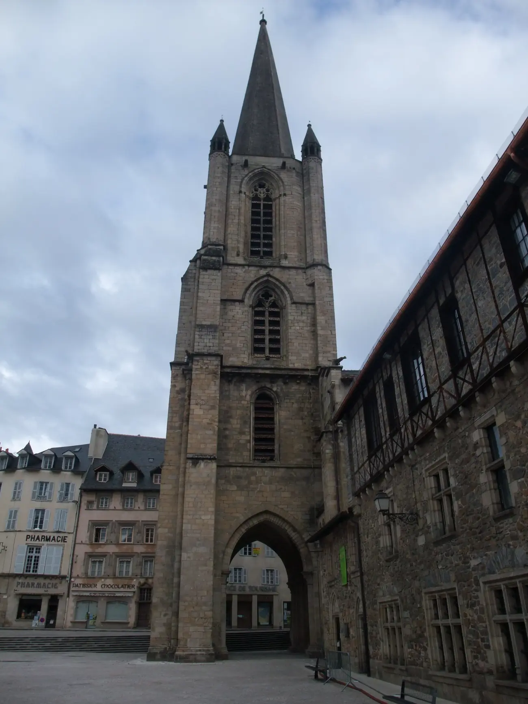

Café barBistrot bio et localTulle, Corrèze
Du bon, du bio, du local.
Un café bar à deux pas de la cathédrale. Depuis octobre 2026, une nouvelle équipe tient le comptoir : café, bières artisanales et petite restauration.
La maison
Un café de ville qui change de mains.
du bon, du bio, du local
C’est écrit sur votre Instagram : « Bistrot tulliste avec du bon, du bio et du local ».
Depuis octobre 2026, une nouvelle équipe est derrière le comptoir du Richelieu. On y vient pour un café, une bière artisanale ou de quoi grignoter, à deux pas de la cathédrale de Tulle.
Un troquet responsable et éthique.Votre page Facebook
La carte
Sur le zinc.
Trois choses sont sûres. Touchez-en une : elle est servie, et la carte se retourne. Les lignes attendent vos mots et vos prix.
Le local
Chaque producteur a son étiquette.
Du bio et du local, ça se montre avec des noms. Dès que vous nous les donnez, chaque étiquette reçoit le sien : un nom, un village, une distance jusqu’à Tulle.
Passez la souris ou le doigt sur les étiquettes : elles se balancent. Aucun producteur n’est écrit ici tant qu’on ne le connaît pas.
Le nom de la maison
Narcisse & Bugle.
C’est le nom de la société qui tient Le Richelieu depuis octobre 2026. Ce sont aussi deux fleurs : le narcisse, jaune, et la bugle, bleue. Elles ont donné leurs couleurs à cette maquette, à côté du rouge du cardinal.
Refaites le carrelage
Carreaux tournés 0Fleurs 0
L’agenda
Les prochaines soirées.
Chaque soirée arrive sous pli. Brisez un sceau pour l’ouvrir : pour l’instant, les lignes vous attendent.
Une ligne par soirée, que vous mettez à jour vous-même, en deux minutes.
En attendant, sur InstagramVenir
À deux pas de la cathédrale.
8 avenue Charles de Gaulle19000 Tulle, CorrèzeLe Richelieu, café bar
Vos jours et vos heures d’ouverture, votre téléphone : à confirmer avec vous. Rien n’est affiché tant que ce n’est pas sûr.

Votre site peut avoir autant de pages que vous voulez.
Ici, une seule page pour vous donner l’idée. Une page pour la carte, une pour vos producteurs, une pour l’agenda : c’est vous qui voyez.
La carteLes producteursL’agendaLa maisonVenirÉcrire